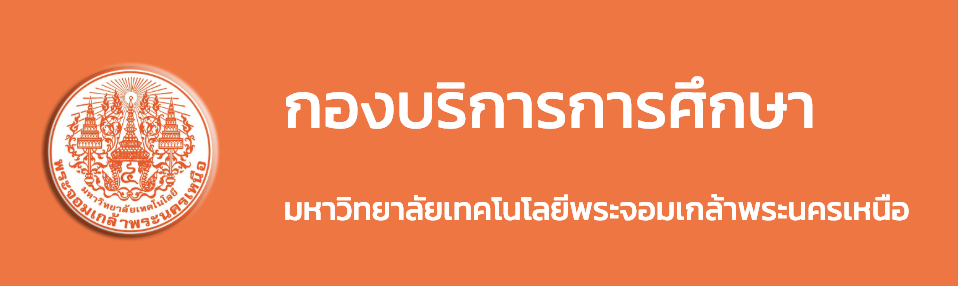

1. ข้อบังคับเรื่องเครื่องแบบ
การแต่งกายนักศึกษาชาย
- ทรงผม เป็นทรงสุภาพ ผมยาวไม่เกินปกคอเสื้อและห้ามทำสีผมผิดจากธรรมชาติ
- เสื้อ ให้ใช้คอปกเชิ้ตปลายแหลม แขนสั้น หรือแขนยาวถึงข้อมือ สีขาวไม่มีลวดลาย
- เนคไท มีเครื่องหมายมหาวิทยาลัย สีและขนาดตามที่มหาวิทยาลัยกำหนด
- กางเกง สีดำ หรือสีกรมท่า
- เข็มขัด สีดำใช้กับหัวเข็มขัดทำด้วยโลหะ รูปแบบตามที่มหาวิทยาลัยกำหนด
- รองเท้าหนัง หรือผ้าใบ สีสุภาพ
การแต่งกายนักศึกษาหญิง
- ทรงผม เป็นทรงสุภาพและห้ามทำสีผมผิดจากธรรมชาติ
- เสื้อ ให้ใช้คอปกเชิ้ตปลายแหลม แขนสั้นเพียงหนึ่งข้อศอก(ไม่ผ่าปลายแขน) สีขาวไม่มีลวดลาย
- กระโปรง สีดำ หรือกรมท่า แบบทรงสุภาพ ไม่มีลวดลาย ความยาวเสมอเข่า
- เข็มขัด สีดำใช้กับหัวเข็มขัดทำด้วยโลหะ รูปแบบตามที่มหาวิทยาลัยกำหนด
- รองเท้าหนัง หรือผ้าใบ สีสุภาพ
2. วินัยนักศึกษา
- นักศึกษาต้องแต่งกายสุภาพ ให้สะอาดเรียบร้อย
- นักศึกษาต้องเคารพสิทธิเสรีภาพ และปฏิบัติตนเป็นพลเมืองดี
- นักศึกษาต้องไม่ละเมิดกฎหมายอาญา กฎหมายแพ่ง หรือกฎหมายอื่นใดที่รัฐกำหนดไว้ หรือกฎระเบียบข้อบังคับ
ของมหาวิทยาลัย
หรือของคณะ
3. ประเภทและลักษณะความผิด
1. ประเภทความผิดวินัยไม่ร้ายแรง เช่น แต่งกายผิดระเบียบ , สูบบุหรี่ในสถานที่ห้ามสูบ ,
กระทำผิดระเบียบในการใช้ยานพาหนะ เป็นต้น
2. ประเภทความผิดวินัยร้ายแรง เช่น กระทำความผิดวินัยไม่ร้ายแรง ลงโทษตักเตือนเกิน 3 ครั้ง , ลักทรัพย์ ,
ปลอมแปลงเอกสาร หรือลายมือ , แอบอ้างหรือใช้ชื่อมหาวิทยาลัยโดยไม่ได้รับอนุญาต , ทะเลาะวิวาท เป็นต้น